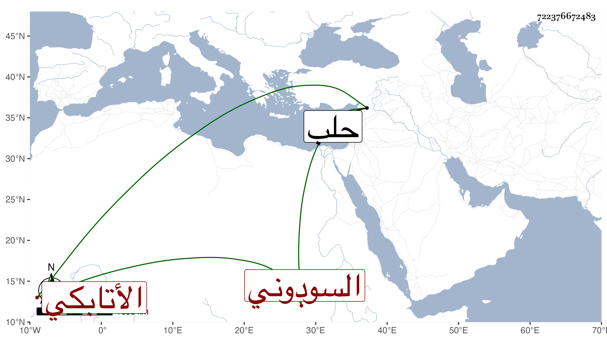

0902Sakhawi.DawLamic.ITO20230111-ara1.EIS1600.722376672483
Biography ID: 722376672483
1089
يشبك السودوني الأتابكي ويعرف بالمشد . يقال أنه لسودون الجلب نائب حلب فلما مات استولى عليه يشبك الأعرج وكان حينئذ نائب قلعتها بغير طريق ثم باعه لططر بمائة دينار ، فلما بلغ ذلك أيتمش الخضري وكان متحدثا على أولاد الناصر فرج قال أن الأعرج افتات في بيعه وسودون مولاه لا وارث له سوى أولاد الناصر ثم باعه ثانيا لططر ، واختص بططر حتى عمله شاد الشر بخاناه عنده فلما تسلطن أنعم عليه بأمرة طبلخاناه ثم عمله شاد الشر بخاناه السلطانية ثم بلغ الأشرف في سلطنته التردد في معتقه فاشتراه من أناس بألف دينار وأعتقه ثم رقاه للتقدم في سنة ثلاث وثلاثين ثم عمله حاجب الحجاب واستمر إلى أن تجرد مع الأمراء إلى البلاد الشامية وعاد معهم في سلطنة العزيز فخلع عليه باستمراره على الحجوبية ثم نقله الظاهر إلى إمرة مجلس ثم بعد يويمات إلى إمرة سلاح ثم بعد أشهر إلى الأتابكية فعظم وضخم ونالته السعادة واستمر يترقى لإقبال السلطان عليه في كثرة الإنعام وقبول الشفاعة والتوقير حتى أثرى وهو مع هذا كله لا يزداد إلا إمساكا وانهماكا فيما لا يرتضى لكن خفية خوفا من الظاهر لبغضه القبيح ، إلى أن مرض فدام مدة وتعطلت حركته ثم عوفي وركب ثم عاد مرضه فلزم الفراش أياما. ومات وهو في الكهولة في شعبان سنة تسع وأربعين وصلى عليه السلطان بمصلى المؤمني ثم دفن بتربته التي أنشأها بالصحراء قبل إكمالها ولم يثن عليه أحد بخير نعم كان ساكنا عاقلا حشما عريا إلا من رمي النشاب على عيوب في رميه وهو في ابتدائه أحسن منه في آخره .
